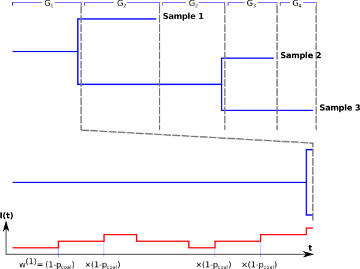
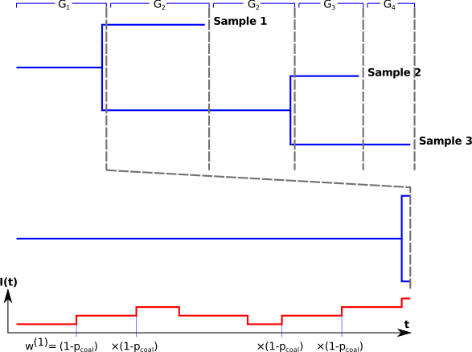

Trees and Beyond!
Adventures in Bayesian Phylodynamics
Stadler Group, D-BSSE, ETH Zürich
D-BSSE Departmental Seminar, 11th Dec, 2018
A phylogenetic tree is a branching diagram or "tree" showing the evoluionary relationships between various species, individuals, or genes.
For example,
The stochastic SIS model\begin{align} S + I & \overset{\beta}{\longrightarrow} 2I\\ I & \overset{\gamma}{\longrightarrow} S \end{align}
Here $p_{\textrm{coal}}=\binom{k(t)}{2}/\binom{I(t)}{2}$ where $k(t)=$ num. of lineages just after $t$.
Nonlinear relationship between WHO case counts and genome samples!


 
